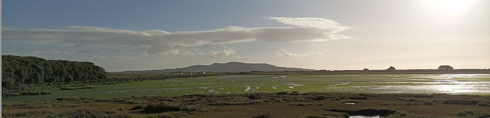
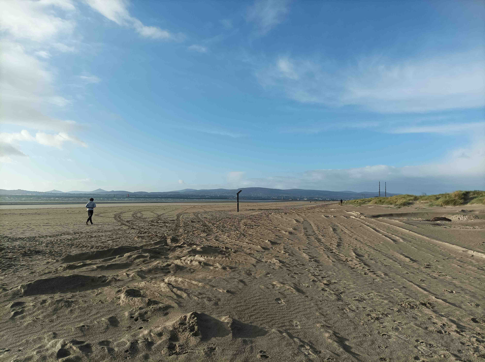
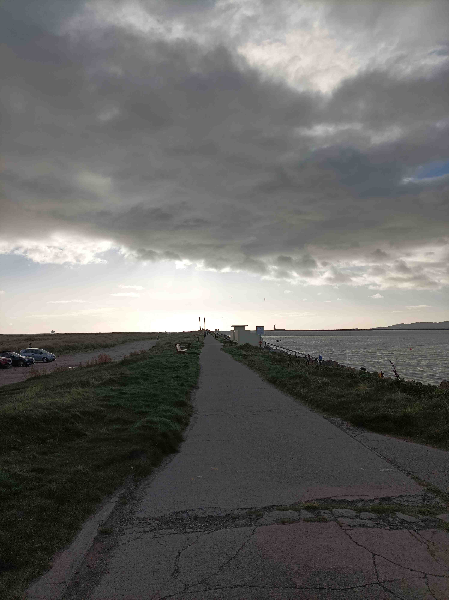

3 Bull Island

0735 Saturday, October 22, 2022
It’s starting to get bright outside and I can feel the bike calling me but I don’t want to wake up the chunfla and force my pregnant missus to wake up too, so I lash on a shitty coat and head out in my leisure pants aka pajamas instead of going upstairs to dig out the lycra. I’m only cycling Yvonne so it doesn’t matter if I look like I’m nipping out for a baguette. I grab a spare t-shirt and use it as a scarf and then I can change later when I stop for coffee and the sweat turns cold. There’s a high-viz jacket floating around too so I envelop myself in its brightness and I’m good to go. I haven’t decided where yet. I’m not in the humour for driving somewhere first and I don’t need to cos it’s just about bright enough.
The lack of mountains on the Northside means that the sea calls even louder when I want at it, so I decide to go directo(ish) to Fairview whence I can let the open air blow away the busyness of my midweek life and the clusterforked urbanscapes which host it. The easiest route there is to follow the simple familiar path along the canal to Ballybough, then nudge off through a few traffic lights and bingo bango it’s the sea. But it’s Saturday and I’m in explorer mode and familiar paths slow down the relaxation process. I want to get back early enough so I can’t be going too far today. I still haven’t fully worked out how the Tolka works its way across the Northside and what impact that has had on the structure of the settlements surrounding it, so mapping that out is a good way to negate the interruptfulness of urban cycling. I’ve seen how the river sneaks past the back of Blanchardstown village and after that it weaves through a bizarre dead space where no cars go before reemerging inside the Tolka Valley Park which sounds more enticing than it really is.

Between my gaff and the Tolka Valley park is a spaghetti junction where the M50 and N3 meet, but the canal and train go through too, the river is nearby, providing the historical outline for the N3, and there’s a cheeky aqueduct in the mix. More bridges than you’ve had hot dinners, as some wit has named the Strava segment along the canal cycleway. The junction even has space for a gym and a small shopping centre. The roads are seamless for longer-range motorists but their mpact divvies up the locality into four quadrants, providing multiple barriers to whatever social cohesion might be found in a place like this.
Castleknock is in the south quadrant, separated from Blanch in the west by the M50 and the canal slash trainline. The two morph westwards into Carpenterstown, Coolmine and Clonsilla. Blanchardstown village has suffered a bad dose off choppyoffyness, yet it has managed to carve out a niche, with several cafes, restaurants and bars, while the better known, soul-sapping Blanchardstown Shopping Centre is a smidge north-west, to the top left of the map, separated by perhaps the slowest traffic light system in Ireland. I find it a good spot to catch up on meditation exercises. The real commercial centre for locals is the Coolmine Industrial Estate, where you’ll find papayas and falafels, mechanics and fitness studios, although no boozers or sit-down cafes. It’s the only industrial estate I’ve ever seen which ought to transition to village status, and its existence shows how facilities can emerge over time despite shitbox planning.
In the Northern quadrant have been placed all of the large campus projects, so you get Connolly Hospital, Blanch IT, Corduff, and more recently, a swathe of high-end sports facilities, where the Olympic swimming pool finally got built, more pitches than a boarding school on roids, conference rooms for the FAI, and open spaces for equestrian events. This is where the Bertie Bowl would have been, and if you need an obscure placename to remind you of the halcyon Celtic Tiger days, try this: Abbotstown. Beyond is a wodge of #BusinessParks and then the land dovetails into the dull farmlands of Meath and North County Dublin.
But it is the Eastern quadrant which I have never understood fully, as the land is undeveloped and there’s no park to help you follow along the river. I try to access the quadrant from Waterville Park and Connolly Hospital but I end up back on the spaghetti junction, pass over the M50, and follow the signs down and around to the supposably ‘New’ River Road. The entrance to the road is a right turn at a junction but I decide to go straight on instead up a marked cul de sac which runs parallel to the M50. It turns out that this is the longest frikkin cul de sac you’ll find in a place without mountains, and there’s not much happening, beyond the noise of the cars whizzing by overhead to the left. It feels like Dublin’s answer to Area 51. There’s a golf course, which explains a lot, and a nursing home. There’s signs for No Dumping and I take this as a red flag indicating potential criminal activity. Sure enough, a car is parked at the very end of the road, so in a freak out, with far too much time to think, I decide to make sure I’m not like a witness to some crime. I think about the kid in the desert in Season Five of Breaking Bad and decide against his fate, and I spin around and piss it back down the gentle decline. Afterwards, I realise that this is the entrance to Dunsink Observatory.
I turn left onto the ol’ New River Road, and enjoy my safety, at least for a few moments. This road may once have been the main road to Navan but now it is the Tolka River’s paltry answer to the Strawberry Beds, that blissful country road which runs seven unruptured kilometres along the Liffey from Chapelizod to Lucan. The Tolka’s River Road has only two undeveloped kilometres and its windiness parallels the meandering scuttiness of the Tolka at this point. No ramps have been put on the road to slow down the impatient motorists. I manage to prevent one overtaker with my outreaching palm, and wave them on after the bend, but the trick is no use for the next driver, a taxi, who passes me by on a bend and, as another car approaches, the taxi uses their skill to solve the needless problem they had created.
There’s a crossroads soon after, left up a dead end towards Dunsink, right to Ashtown roundabout and the main Navan road etc, and roadworks straight ahead, with access only for the canal-side apartment complexes in progress. The options aren’t great, as you might expect in a null space, but I want to stick to the river, so I go straight and then have to dismount the bike in order to get into the appropriately named “Linear Tolka Vallay Park”. I’ll hold my thoughts for now on having to dismount a bicycle to access a park with a bike lane, and I get in to find an under-landscaped, semi-kempt park. The place is in dire need of fifty years’ worth of tree growth, and the linearity is a reference to the narrow impact the park makes on the surrounding urbanscape, rather than to the direction of the paths, which which interweave in response to the steepish river banks, and the next time I’m coming here will be when me five-year-old is ready for a BMX. There is a handful of dog walkers and it might be a bit early — or scary — for joggers and I plough on, disappointed that nothing pleasant has yet emerged along the Tolka, beyond my curiosity being satisfied.
The park kicks you out for a bit, forcing you to cross a wide-ish road, before letting pedestrians back in through a barrier-gate, so I take the L and follow the road til I come to Glasnevin cemetery, through which the widening river flows, thence into Botanical Gardens. I chicane left-right around its back walls and reemerge on Botanic Avenue where I encounter the neat Griffith Park, the first bit of pleasant, well-sculpted land I’ve encountered since leaving my gaff a dozen clicks before. It’s a sure sign that the Northside Riviera is nearby and I just have to negotiate Richmond Road first. Like anywhere in Dublin named Richmond it is run-down as fuck, but its unmatched buildings provide several glimpses of the rare aul’ times when people ran their own unkempt business for unmadeup people.
I can feel the clamping grip of buildings letting me go as I hit Alfie Byrne Road where the land ends and the soothing spaciousness of the sea begins, yeswithstanding the scaldiness of Dublin Port across the unreclaimed remainder of the Tolka River estuary. It doesn’t matter that there are complex roadworks and orange signs and people directing us either hither or thither. Here now is the relative nothingness where the unblocked sun bounces limegreen brightness off the seaweed slimefields and the retreating seawater lures my space-craving soul into a crazed chase for freedom. I follow the coastal bike lane and feel the seabreeze on my face and my mind empties of thought for a moment or three.

I realise that this is an easy chance to check out a lighthouse, either here in Clontarf or yonder in Howth. I want to follow this cycle path of freedom all the way to Howth but I keep stopping to marvel at the brightgreen glory of the seaweed fields and I think of AtlasPro’s simple observation that the whole world is covered in land, and only some of it is covered by sea. Here is a chunk that oscillates twice daily between being land, as we usually think of it, and being the snotgreen sea, an opaque world to man. I think of times past and future when this land will be habitable for mankind, and of Doggerland and other drownded lands which some other poor souls must have tilled or foraged for scran.

Taking photos has broken my momentum so I decide to avoid trekking to Howth and instead I decide to go to the Stella Maris lighthouse at the end of the Bull Wall. I turn right onto Causeway Road which also connects the mainland to Bull Island, twenty-four/seven. Amazingly, I’ve never been down here before, even though my mam is from Clontarf and I spent much of my childhood at the Bull Wall. It is extraordinary to approach this familiar place from a new angle and the road leads to the very middle of the expansive beach. There’s dogwalkers and golfers and actual birdwatchers, and a derelict building with picnic benches suggests that this was once a heavily frequented spot, presumably before pollution dirtied the swimwater and everyone started to fock off to Spain for some reliable beach bliss.

I get to the beach but I realise that there’s no way to transport Yvonne across 2k of sandy beach unless I actually lift her, so I double back on myself and do a looparooney towards The Wooden Bridge. It’s still early enough that the place isn’t jammers and I can peddle slowly along the pier all the way to the Stella Maris lighthouse.

From there the three-sixty views are immense. In the right half, you can watch the ferry nudge between the lighthouses on its way to Dublin Port, and to the left is the Sutton side of Howth Head and the rest of the unspoilt Northside Riviera, encompassing Bull Island and the Sutton isthmus. I start to take this lighthouse project more seriously and I’m thinking we’re going to have to invest in a camper van or something if I want to make it happen. It’s not like I’m going to be able to just nip off on my Tobler eighty or ninety times on overnighter trips to see lighthouses in Antrim, Donegal and Kerry. Our second bambino is on the way and getting out of Dodge takes planning now. This project will only work if we all go together and, while we’re at it, we can check out houses to buy around the country. I want to live beside the sea even though it feels like an outrageous indulgence. But I understand now how my mam never recovered from moving inland from Clontarf to Lucan. The sea takes you out of your world and without it, escaping is a lot harder. And I need to escape.

Dublin Port is a pot of gold that could redesigned as modern living for thousands